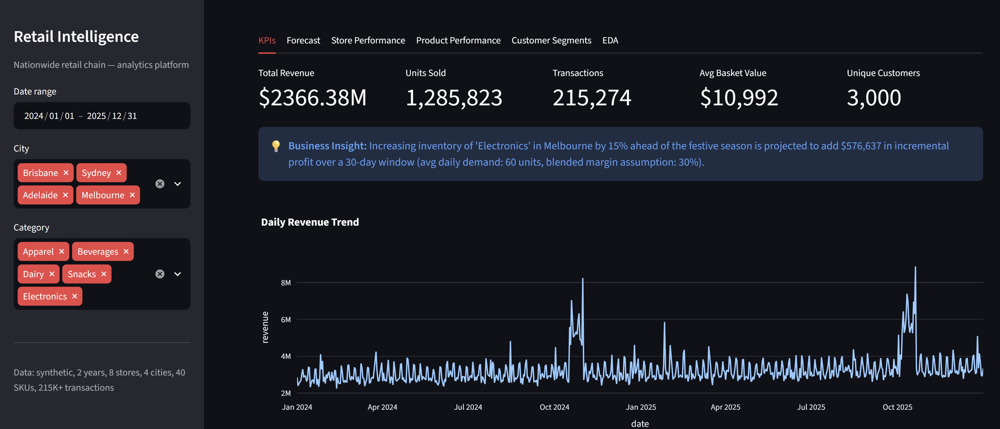
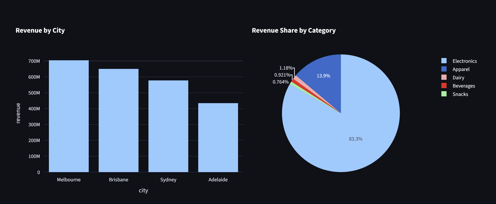
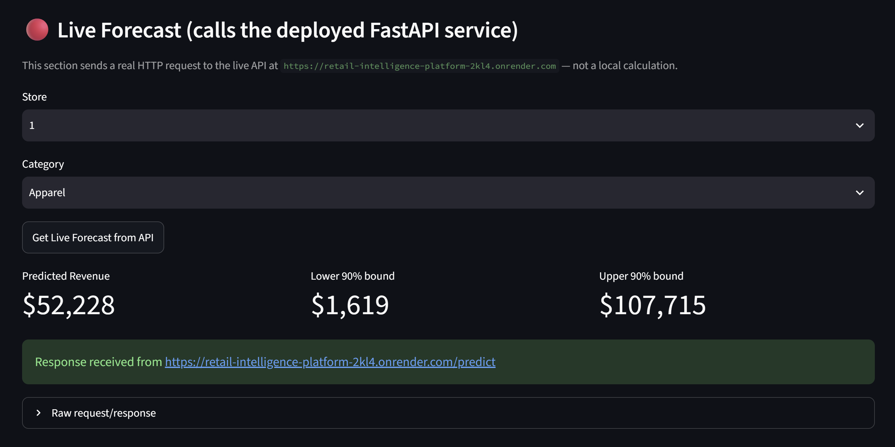
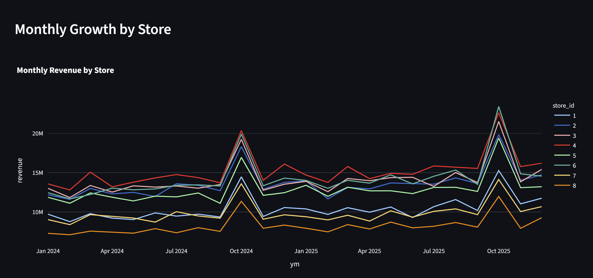
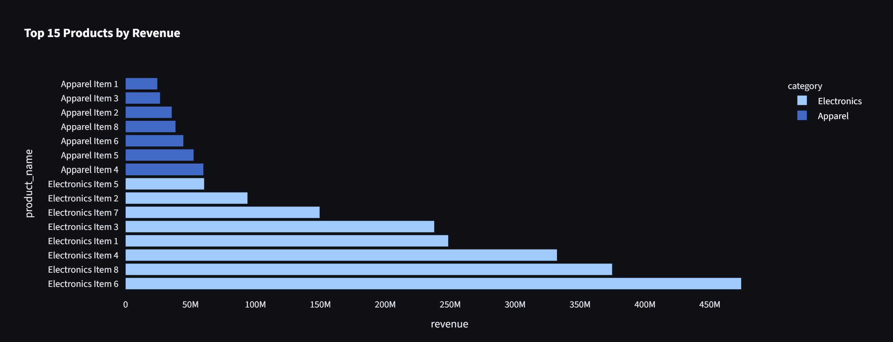
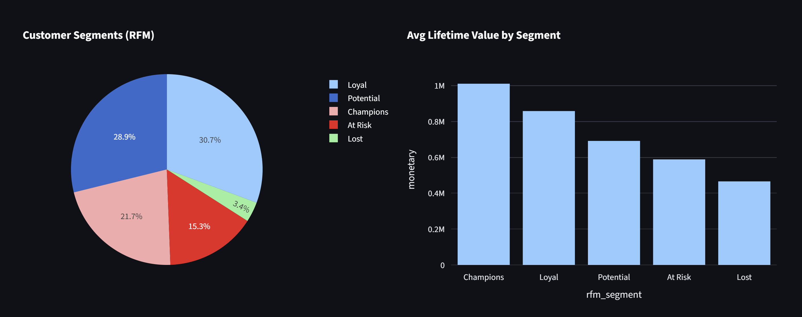
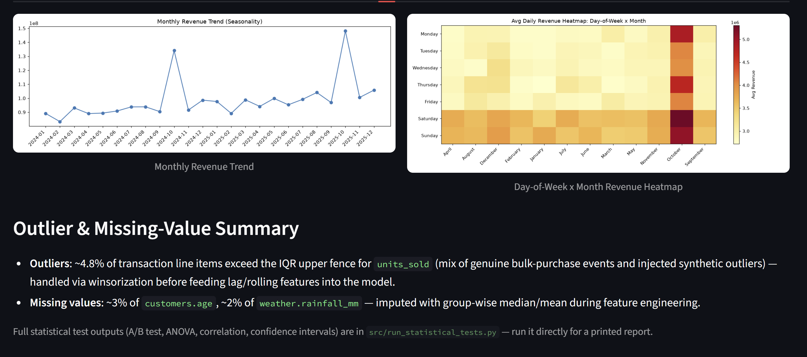

An end-to-end analytics platform built on a simulated nationwide Australian retail chain — 8 stores, 4 cities, 40 SKUs, two years of daily transactions. Advanced SQL, statistics, feature engineering, ML forecasting, and business insights, all served through a live FastAPI backend and an interactive Streamlit dashboard.

Headline metrics — $2.37B total revenue, 1.29M units sold, 215K+ transactions — filterable by date range, city, and category, alongside an auto-generated business insight and the daily revenue trend.

Melbourne leads all four cities at roughly $700M, ahead of Brisbane, Sydney, and Adelaide. Electronics alone accounts for 83.3% of total revenue share — a heavy category skew worth digging into.

This isn't a local calculation — it's a genuine HTTP request to the deployed FastAPI service, returning a point forecast plus a 90% prediction interval in real time.

All 8 stores tracked over 24 months, with a sharp, consistent spike every October — store 4 leads most months, store 8 trails throughout.

Electronics dominates the top of the list outright — the single best-selling SKU alone brings in close to $470M, dwarfing every Apparel product on the board.

Loyal (30.7%) and Potential (28.9%) customers make up most of the base, but Champions — just 21.7% of customers — carry the highest average lifetime value of any segment.

Monthly seasonality and a day-of-week × month heatmap confirm weekend and October spikes, alongside a transparent outlier and missing-value audit — 4.8% of line items exceed the IQR fence, handled via winsorization before modelling.
A lot of portfolio projects stop at "trained a model, got 85% accuracy." This one is built around a question retailers actually pay analysts to answer: where should we stock more inventory, and what's it worth in dollars? Every layer feeds that answer — SQL views compute the KPIs, statistical tests check whether a promotion actually moved the needle, LightGBM and XGBoost forecast demand, and the final output is a concrete profit number tied to a real stocking decision.
The whole pipeline is live, not just screenshots: a FastAPI service serves real-time forecasts with prediction intervals, and a Streamlit dashboard calls that same API directly for its "Live Forecast" demo — the numbers you see are computed on request, not pre-baked.
"Demand looks strong" isn't actionable — a stocking decision needs a projected profit number attached to it, not just a trend line.
A one-off analysis answers today's question. A live API and dashboard keep answering new ones as the business asks them.
A single predicted number invites false confidence. Every forecast here ships with a 90% prediction interval alongside it.
Generated two years of realistic daily transactions across 8 stores and 4 cities, then built SQL views and window-function queries to compute revenue, growth, and rolling KPIs.
Ran hypothesis tests and correlation analysis to validate what actually drives revenue, and audited the data for outliers (4.8% of line items) and missing values before modelling.
Built lag, rolling, and calendar features, then trained LightGBM and XGBoost models to forecast daily demand per store and category, with SHAP for explainability.
Wrapped the trained models in a FastAPI service (Dockerised, deployed to Render) and built a Streamlit dashboard that calls it live for real-time forecasts with prediction intervals.
A single category accounts for 83.3% of total revenue share, with the top-selling Electronics SKU alone generating close to $470M — a concentration worth watching closely.
Every store shows a sharp, near-identical spike in October across both years of data — a highly predictable seasonal pattern, not a one-off.
Champions make up only 21.7% of customers but show the highest average lifetime value of any RFM segment, well ahead of the larger Loyal and Potential groups.
The day-of-week × month heatmap shows Saturday and Sunday consistently outperforming weekdays, most dramatically during the October revenue spike.
An 83.3% revenue concentration in one category is a real business risk — worth stress-testing what a demand shock in Electronics would do to overall revenue.
Given how consistent the October spike is across every store and both years, inventory planning should treat it as a certainty, not a forecast risk.
With Champions showing the highest LTV despite being a smaller segment, targeted retention offers here likely carry the best return of any customer initiative.
Store 8 trails every other location in nearly every month of data — worth understanding whether that's a location, staffing, or local demand issue.
With Saturday and Sunday consistently outperforming weekdays, staffing and stock replenishment schedules should weight toward the weekend, not spread evenly.
Melbourne outperforms every other city by a meaningful margin — understanding what's driving that (store count, local demand, marketing mix) could inform expansion in Sydney and Adelaide.